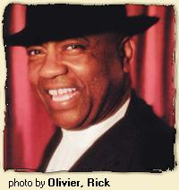

W.C.Clark - отец-основатель блюзовой сцены в Остине - выступал вместе с такими музыкантами как Ти Ди Белл (T.D. Bell) и Эрби Баузер (Erbie Bowser), Джо Текс (Joe Tex), Анжела Стрели (Angela Strehli), Крис Лейтон (Chris Layton), Томми Шеннон и многими другими. Наиболее широко известно сотрудничество Кларка со Стиви Рей Воном (Stevie Ray Vaughan). Один из известнейших хитов Стиви Рей Вона "Cold Shot" написан при участии Кларка. Музыканты работали вместе в группе Triple Threat Revue. Группа, с которой Кларк выступает в настоящее время - the Blues Revue - дает ему возможность демонстрировать свою мощную гитарную игру и динамичное пение.Digital Interviews: Когда у вас впервые появилось желание исполнять музыку?
W.C. Clark: Я думаю у любого юноши появляется много желаний, когда ему приходится выполнять тяжелую работу. Я знал, что не хочу работать на износ всю свою жизнь, поэтому я всегда находился рядом с музыкой - будь то гитара, гармоника или пианино, будь то госпел, блюз или кантри. Я видел ребят, выступавших на ТВ, все эти их Кадиллаки и гитары, и я думал: «Вот чем я хочу заниматься». В этом и состояло мое желание. Я находился в окружении таких талантливых людей, что это просто не могло пройти бесследно. Моя мама была певицей. Моей обязанностью было сопровождать бабушку в церковь. По дороге в церковь и обратно домой, я постоянно слышал госпел. Мне не так часто приходилось слышать блюз в раннем возрасте, потому как моя семья жила музыкой госпел. Мой приемный отец слушал блюз по радио, вот в эти моменты и мне удавалось его послушать. У меня был кузен, у меня есть кузен - Биг Пит Пеарсон (Big Pete Pearson). Он оказал на меня самое большое влияние. Он уже тогда играл и пел блюз, он меня к блюзу и привел. Я следовал по его стопам. Он все еще идет этой дорогой. И я тоже.
DI: Расскажите, что представляла собой музыкальная жизнь в Остине, когда Вы были молоды?
WC: Она не была такой коммерческой, приманкой для туристов. Она была пищей для души, источником веселья, возможностью выразить себя. Я вырос в ней. В то время большинство чернокожих росло в блюзе, из блюза, в блюзе. Я становился старше и ситуация менялась. Было легко понять, что черная блюзовая сцена шла на убыль, теряла силу, потому что все тянулись к чему-нибудь другому. Помню, как-то Руфус Томас (Rufus Thomas) сказал в своем интервью нечто, что поразило меня. Он сказал «Блюз должен идти вперед, он должен расти». Его не удержишь. Он должен развиваться, самостоятельно. Так, если он не активно представлен в одном месте, он найдет другое место, чтобы все продолжалось. Я за это ручаюсь, потому что я видел, как он менялся, а был я по обе стороны.
DI: Кто были Ваши первые блюзовые учителя?
WC: Никто меня не учил блюзу. Я воспитывался в среде музыки госпел и среди гитаристов, исполнявших госпел. Исполнителей блюза было мало, я имею в виду настоящий блюз, на гитарах, гармониках и скрипках. Наверное, тот саунд разбудил во мне чувство, которое уже было во мне заложено.
DI: Как Вы попали в группу Джо Текса?
WC: Его группа распалась. Я знал Джо Текса. Он родом из Навасоты, Техас (Navasota, Texas), а я родом из Остина, Техас. Он выступал в Остине, играл с нами и все такое. Я узнал, что ему нужен был гитарист. Мы сошлись, и он взял меня, а потом мы поехали на гастроли.
DI: Когда Вы вернулись в Остин, Вы создали свою собственную группу.
WC: У меня и раньше были группы, но да, я приехал и собрал свою группу под названием Southern Feeling. С участием Анжелы Стрели (Angela Strehli) и Денни Фримана (Denny Freeman). Наша база была в Остине. Все жили в разных местах, но наша база была в Остине и группа у нас была очень хорошая. Мы некоторое время выезжали с концертами в Сан-Фрациско, Сиэттл. Вернулись в Остин, и все очень быстро поменялось. Каждый хотел делать что-то новое. Все говорили о необходимости записи, а потом эта группа развалилась. После этого я собрал the Blues Revue - группу, в которой я играю сейчас.
DI: Вам всегда будут задавать вопросы о Стиви Рей Воне.
WC: Конечно.
DI: Вы ушли из своей группы, устроились на «постоянную» работу, а затем стали выступать с ним. Как все это происходило?
WC: Я был женат, и мне все время были нужны деньги. Я продолжал играть по мере возможностей. Я не имел постоянного заработка, поэтому мне пришлось устроиться механиком. Я механик по профессии, так что если я захочу: а я не хочу [смеется]. Когда Стиви впервые приехал в Остин, он приходил поиграть, просто приходил ко мне в гости. Он был очень славным парнем, который искал музыкального общения. В то время он играл с Cobras. Он приходил поиграть с моей группой. После этого я начал работать. Однажды он пришел ко мне на работу и стал говорить, что я плохо обращаюсь со своими руками - вся эта грязь у меня под ногтями, ну и в таком духе. Он сказал, что собирает группу, в которой будут играть он, Майк Киндред (Mike Kindred), Фредди Уолден (Freddy Walden) и Лу Энн Бартон (Lou Ann Barton). Я ответил: «Конечно». Мы начали репетировать и назвали группу Triple Threat. Мы играли, и все было замечательно. Потом и с этой группой стало происходить то же самое: все стали расползаться. Стиви собрал Double Trouble. К тому времени у меня появилась группа, в которой я играю сейчас.
DI: Ваш первый альбом вышел в 1987.
WC: До этого мы со Стиви выпустили сорокопятку. Не знаю, где ее теперь можно найти, но я выпустил сорокопятку со Стиви на гитаре. Это было наверное в году 82-ом, а потом в 86-ом или 87-ом я сам выпустил Something for Everybody. Я все сделал сам - это был мой лейбл, и я сам написал все песни [смеется]. Я сделал все по-своему. Это хороший альбом. Его и сегодня покупают. Сейчас я никому не посоветую повторить мой опыт. Сегодня все проще. С приходом CD, можно самому нарезать диски. В те времена приходилось зависеть от великого множества людей. А всякий раз, когда ты зависишь от кого-то - это стоит тебе денег. Вот и мне все это обошлось в очень приличную сумму. Сегодня все проще. Но я сделал это.
DI: После выпуска этого альбома Вы сконцентрировались на гастролях. Почему?
WC: Мне кажется, я происхожу из того круга музыкантов, которые посвящали себя музыке, не особо задумываясь о деньгах. Все было по-другому в то время. Я был доволен. Денег мне хватало, жил я здорово. Меня, как и многих других музыкантов тогда, не интересовали звукозаписывающие компании. Мы больше видели в них отрицательную сторону. Мы понимали, что в итоге появятся двери, куда нужно будет достучаться. Двери эти не откроются, пока ты сам не изменишься. Может эти изменения были бы и к лучшему. По этой причине меня это тогда и не интересовало особо.
DI: Вы вернулись в 1994, выпустив альбом Heart of Gold, который всех свел с ума.
WC: Раньше я никогда не работал с профессиональным продюсером, и мне было интересно. Я работал с людьми, которые знали толк в том, что делали. А я знал, что делал я. Я знал, что нужно было делать, и все это делалось. Это было просто здорово. Кац (Kaz), мой музыкальный продюсер, он по-настоящему образованный и спокойный человек. Никто раньше не занимался продюсированием моего пения и игры на гитаре. Мы с Кацем играли вместе много лет. Я доверяю его мнению. Все сработало здорово.
DI: Затем Вы выпустили Texas Soul.
WC: Я не ожидал, что получу приз W.C. Handy. Я не ожидал, что альбом станет Альбомом Года. Тут и добавить нечего, понимаете [Смеется] Примерно в то же время альбом Стиви стал платиновым, а я получил за песню "Cold Shot" 20 процентов. Все это свалилось на меня разом. Так что, это был хороший год. [Смеется]
DI: Недавно Вы попали в трагическую автомобильную аварию. Вы единственный остались в живых. Как это изменило Ваш взгляд на музыку и на жизнь?
WC: На моем следующем альбоме [1998 год, Lover's Plea] есть песня "Are You Here, Are You There?", ее написал я. В ней поется об этой аварии. А взгляды мои изменились так, что я осознал, что жизнь не так важна, как мы думаем. Мы думаем, что жизнь так важна. Если она так важна, почему же тогда лишиться ее вот так просто? (щелкает пальцами). Вот, что я вынес. Или ты уходишь или остаешься. Так и не иначе. Вот и все. После этого я стал очень серьезно задумываться о своей музыке. Это повлияло на мою психику. Я не посещал психиатра или там, кого еще, я сам справился. Но я не был уверен, что снова начну играть. Я не был уверен, что это будет правильно. Я должен был через это пройти. Я просто сидел, я не думал много об этой аварии, но я думал: «Что мне делать?». Потом, неожиданно я осознал, что у меня есть руки и ноги, я стал думать: «Я цел. Ничего не сломано, и я раздумываю, нужно ли мне вновь играть? Конечно же нужно». Я снова начал играть. Я просто стал немного серьезнее. Я серьезнее, чем я был когда-либо. Я играю лучше, и я пою лучше.
DI: И у Вас скоро выходит новый альбом?
WC: Предыдущие три пластинки вышли на Black Top. Новая выйдет на Alligator.
DI: Какой совет Вы дадите молодому музыканту?
WC: Я понял, что свое место есть у всего, и всему есть свое место. Я понял, есть то, что ты можешь и то, чего ты не можешь, а может быть то, что тебе и не нужно. Если ты играешь на басу - у тебя своя категория. Если играешь на гитаре - своя. Ты занимаешь определенную позицию внутри самой музыки. То место, где ты должен играть, твое место. Ты не должен прыгать на чужое место. А когда человек знает, что играет и к какой категории принадлежит - все в порядке.
Интервью с сайта Digital Interviews
Перевод Арсена Шомахова